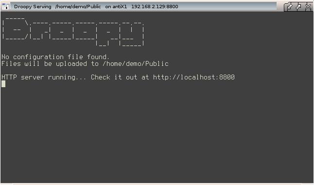
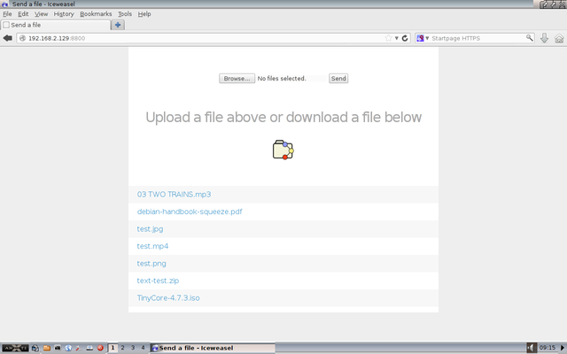
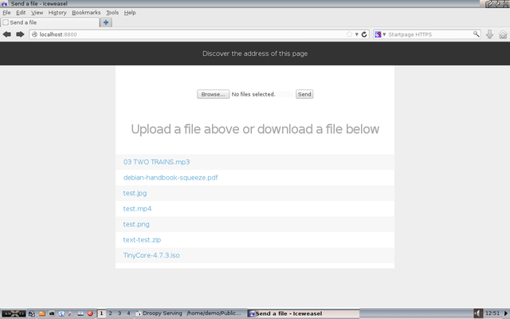

Conventions
What is Droopy?
It is a simple way of using a network connection to make a folder in your local antiX system available to other systems. The remote system can upload and/or download files to and from the folder.
Additional apps are not required on the remote system. If it has a web (internet) browser it can access your folder. Files can be transferred to and from a PC, laptop, smart phone etc.
The remote system can be Linux, Mac, Windows etc.
Features
-
Transfer files over a local network or the internet
-
An option to choose whether access requires a name and password
-
Choice of connecting via HTTP or HTTPS for additional security
-
An option to control the permissions of a file uploaded to the folder
-
Monitor who is connected and what they are doing
-
Switch the server on and off as desired
-
Nominate an alternative folder to serve
-
Specify an alternative port number
-
Create your own message to be displayed on the web page
-
An option to display your own choice of logo on the web page
-
Works in both GUI and console modes
-
Tiny amount of storage space is used by Droopy and related files
Getting Started
As long as you have a folder named Public in your home folder, and have x-terminal-emulator installed, Droopy will work without changing any settings.
|
|
To check whether x-terminal-emulator is installed: 1. Open a terminal 2. Type which x-terminal-emulator 3. If it is installed it will report the name of the terminal app |
If it is not installed, or you want to use an alternative, refer to the section named Fine Tuning,
Starting Droopy
From the antiX menu select
Droopy
A window opens to indicate the Public folder is being served.

The main body of the window is used to monitor which system is accessing the served folder and what that system is doing.
The titlebar shows the location of the served folder, the local system name, and the IP address plus port number Droopy is using. The latter parts are used to contact Droopy from a remote system.
While the window is open Droopy continues to serve the Public folder. To stop serving it, simply close the window.
Transferring Files
Put some files in the Public folder to make them available to download.
Transfer Across Local Network
On a different system open a web (internet) browser e.g. Iceweasel.
In the address area type the IP address and port as shown in the
titlebar of the Droopy server
For example
http://192.168.2.129:8800
|
|
If a domain name server (DNS) is running on your network a name can
be used instead. For example http://antix1:8800 |
Iceweasel shows the page served by Droopy

To Upload to the Public Folder
1. Press the Browse button
2. Select one or more files
3. Press the Send button
To Download from the Public Folder
1. Right-click on a file in the list
2. Select Save Link As
3. Choose where to save the file
Transfer Across Internet
On the system that is running Droopy, open a web (internet) browser e.g. Iceweasel.
In the address area type
http://localhost:8800
Iceweasel shows the page served by Droopy plus a black banner

In the banner, click Discover the address of this page. This shows the IP address plus port to be entered into the web (internet) browser in the remote system which may be anywhere in the world.
Droopy is likely to be running behind a firewall or a NAT router. To enable transfer of files across the internet they must be configured to allow connections on port 8800 to your Droopy system.
Because each firewall/NAT router does this in its own way, you should refer to its user manual to do the setting up.
Once the connection has been established, files may be transferred in the same way as described above.
Fine Tuning
You can control the Droopy server by changing its settings.
|
|
Settings are held in a single hidden file in your home folder .config/droopy/droopy.conf |
Usually the default settings do not have to be changed for Droopy to work.
If your system does not have x-terminal-emulator installed you have to tell Droopy the name of the terminal emulator to use. To do this open droopy.conf in a text editor.
|
|
A simple way to open droopy.conf for editing is 1. Switch your file manager to show hidden files 2. Browse to .config/droopy/droopy.conf 3. Select the file and open it in your text editor |
In the file, find the section that sets the terminal emulator. The default setting is for it to be left empty (blank). Simply enter the name of your preferred terminal emulator and save the file.
|
|
Example setting urxvt as the preferred terminal |
Each of the other settings has its own section laid out in a similar way. Guidance is provided to indicate the purpose of the setting and its default value.
After changing a setting Droopy should be restarted for it to take effect.
Summary of Files
Configuration file is located in /home/USERNAME/.config/droopy/
-
droopy.conf is the default configuration file
Executable files are located in /usr/local/bin/
-
droopy.sh is the launcher for the server
-
droopy is the Python app that does the work
Menu files are located in /usr/share/applications/antix/
-
droopy.desktop
Icon file is located in /usr/share/pixmaps/
-
droopy.png
Video
antiX 13 - Droopy - A Simple Way to Transfer Files by runwiththedolphin https://www.youtube.com/watch?v=J2I0okt7mIU